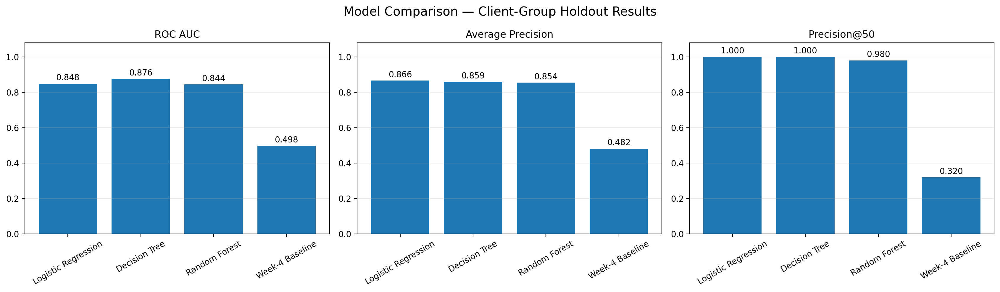
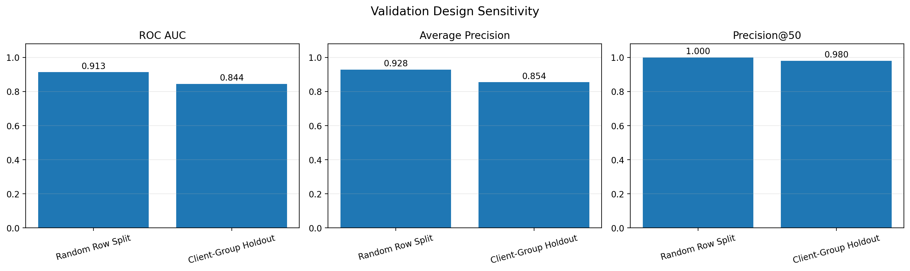
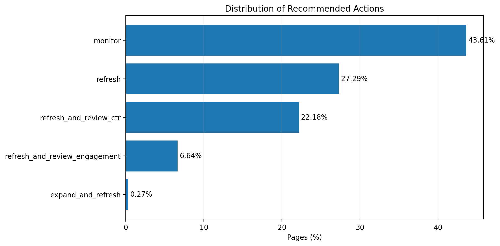

Abstract
This study asks whether observable search-performance, engagement, and freshness signals can help prioritize existing website pages for content-refresh review. It frames the task as page-level ranking and compares a rule-based baseline with logistic regression, a decision tree, and a random forest. In the uploaded notebook outputs, the decision tree reports the highest ROC AUC (0.876), while logistic regression and the decision tree both report Precision@50 of 1.000 on the client-group holdout evaluation. A validation audit shows lower performance under client-group holdout than under a random-row split, illustrating why the validation design matters. The ranking is intended to guide human review; it does not establish that refreshing a page causes improved search performance.
1. Research question and decision
Research question: Can observable search performance, engagement, and freshness signals be used to rank website pages by priority for content refresh?
Decision supported: Which pages should a content or SEO team inspect first? The unit of analysis is one page per row, and the output is a ranked list with a refresh-priority score.
2. Data
The supplied project report describes a pseudonymized starter dataset with 30,000 page-level rows and 44
columns. The associated label is is_declining_label, derived from the observed trend direction. The
saved notebooks' outputs are used here as the reported evidence; this page does not claim that the full
warehouse was processed.
Private client names, domains, URLs, private search queries, page titles, credentials, and other identifying information should not be included in public artifacts. The ranked sample below uses synthetic aliases.
3. Methodology
Target and features
The target is a proxy label for observed decline, not a future refresh outcome. Candidate predictors include visibility, click and impression signals, average position, freshness, and content characteristics where available.
Models and baseline
The supplied notebook outputs compare logistic regression, a decision tree, and a random forest with a Week-4 baseline. Metrics are ROC AUC, average precision, and Precision@50. The client-group holdout is the primary generalization check because pages from a held-out client should not be shared across train and test.
Leakage and validation
Features directly defining the target, such as trend_direction or trend_pct, must not
be used as predictors. The validation audit compares a random-row split with a client-group holdout; the
difference should be disclosed rather than selecting only the more favorable result.
4. Results
| Method | ROC AUC | Average Precision | Precision@50 |
|---|---|---|---|
| Logistic Regression | 0.848 | 0.866 | 1.000 |
| Decision Tree | 0.876 | 0.859 | 1.000 |
| Random Forest | 0.844 | 0.854 | 0.980 |
| Week-4 Baseline | 0.498 | 0.482 | 0.320 |


The decision tree has the highest ROC AUC in these saved results, while logistic regression has the highest average precision. Logistic regression and the decision tree tie on Precision@50. The preferred model therefore depends on the intended operating objective; it should not be chosen from one metric without considering validation and review capacity.
5. Limitations
- Proxy label: observed decline is not the same as verified future performance or refresh success.
- Observational data: the results do not establish a causal effect of refreshing content.
- Generalization: performance may differ across clients, verticals, search markets, and time periods.
- Evaluation sensitivity: random-row validation appears more optimistic than client-group holdout in the supplied audit.
- Human review required: editorial quality, search intent, business context, and factual accuracy are not fully represented by the score.
6. Ranked recommendations: action playbook
- Review high-ranked pages first. Confirm that the signals are valid and the page is still relevant.
- Diagnose the likely issue. Inspect impressions, clicks, CTR, average position, freshness and engagement indicators.
- Choose a targeted intervention. Update stale facts, address search-intent mismatch, or review search-result presentation when appropriate.
- Measure outcomes after changes. Compare post-refresh metrics with a documented pre-refresh baseline and, where possible, a comparison group.
- Reassess the ranking. Monitor usefulness and revise the workflow as new outcome evidence becomes available.
A high score means “review earlier,” not “refresh automatically.”
Anonymized ranking sample
The downloadable CSV contains synthetic page aliases and fields visible in the supplied saved output. It is a small sample, not the full ranked queue.
Download anonymized top-ranked pages (CSV) · Download action summary (CSV)

7. Reproducibility and credits
Source repository: Dev-hashh/flyrank-ml-internship-starter.
Relevant notebooks used for the saved outputs: w04_baseline_score, w05_model,
w06_validation_audit, and w07_action_playbook. Link these files directly in the
repository before final submission if they are committed there.
Metrics and charts should be regenerated from the committed notebook outputs when the final pipeline is rerun. The exact software environment and data version should be documented in the repository.
Data credit: Built on the FlyRank ML Internship dataset.